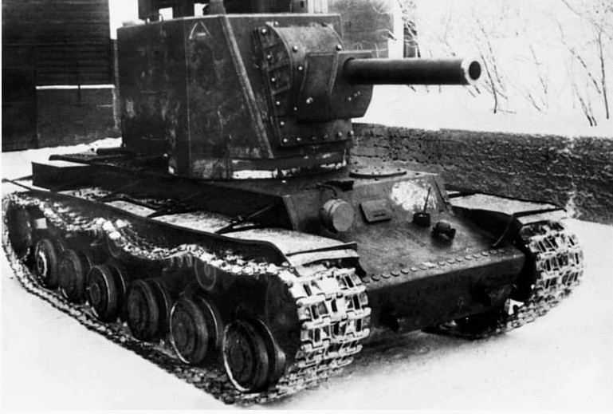
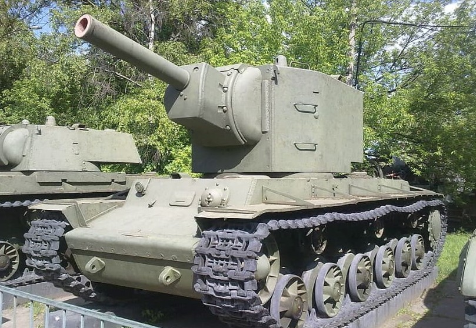

Le KV‑2 est l’un des chars les plus impressionnants visuellement de la Seconde Guerre mondiale. Construit sur le châssis du KV‑1, il reçoit une tourelle gigantesque abritant un obusier de 152 mm, destiné à détruire les fortifications et les points d’appui ennemis. Sa silhouette massive en fait un symbole des chars d’assaut soviétiques du début du conflit.

Le KV‑2 est conçu pour appuyer l’infanterie dans les attaques contre des positions fortifiées. Son obusier de 152 mm peut détruire bunkers, casemates et bâtiments défensifs, mais son poids extrême et sa tourelle haute le rendent vulnérable sur terrain difficile et en combat mobile.
Rôle : destruction de fortifications, appui lourd, percée de lignes défensives.

La tourelle du KV‑2, très haute et lourde, pose de nombreux problèmes en pratique : rotation difficile en pente, silhouette facilement repérable, centre de gravité élevé. Si le char impressionne par sa puissance de feu, il souffre d’une mobilité limitée et d’une grande vulnérabilité lorsqu’il est isolé.
Limites : lenteur, problèmes mécaniques, vulnérabilité aux tirs latéraux et aux attaques coordonnées.
Le KV‑2 ne connaît pas autant de variantes que le KV‑1, mais deux types de tourelles sont généralement distingués : une version initiale très haute et une version légèrement modifiée pour améliorer l’ergonomie et la fiabilité. Dans tous les cas, le concept reste celui d’un char d’assaut lourd spécialisé.